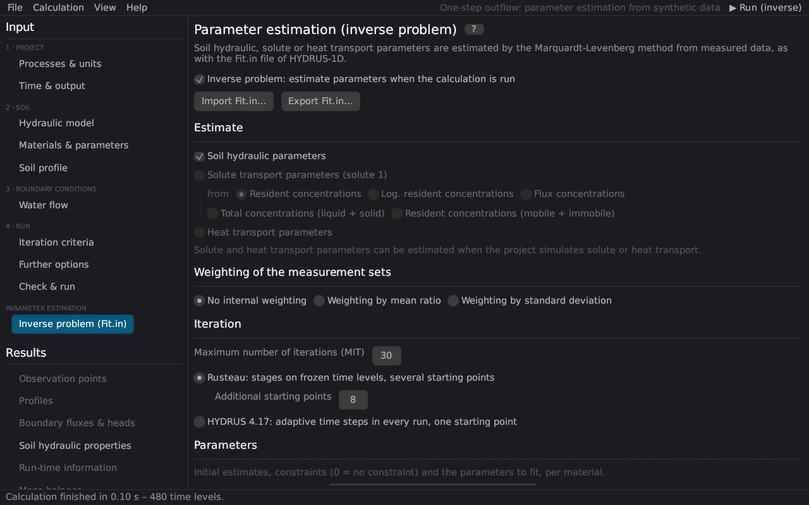

Parameter estimation (inverse problem)
On this page the parameter estimation is set up: which parameters to estimate, their initial estimates and constraints, the measured data (observations) and the iteration. It corresponds to the Inverse Solution, Soil Hydraulic Parameters – Inverse and Data for Inverse Solution dialogs of HYDRUS-1D and the file Fit.in. The method is described in parameter estimation.


Switch on Inverse problem and create the settings from the current project, or import a Fit.in. Export Fit.in… writes the settings for HYDRUS-1D.
Estimate
| Group | Description |
|---|---|
| Soil hydraulic parameters | θr, θs, α, n, Ks, l and the extra parameters of the model; with hysteresis also θm, θs,w, αw, Ks,w with the optional constraints (θm = θs, αw = 2α, Ksw = Ks) |
| Solute transport parameters | of solute 1: bulk density, dispersivity, f, θim, diffusion, sorption, decay, rate coefficients; with the type of concentration of the objective function (resident, logarithm, flux, total, mobile + immobile) |
| Heat transport parameters | θn, θo, λL, b1–b3, Cn, Co, Cw (HYDRUS 4.17; temperatures are observations of type 4) |
Solute and heat parameters exclude each other, as in HYDRUS 4.17.
Weighting of the measurement sets
The measurement sets are the observation types. No internal weighting: all sets weight 1. By mean ratio: each set is weighted by the ratio of the smallest mean of all sets to its own mean. By standard deviation: 1/(√n σ) of the set (objective function).
Iteration
| Input | Description |
|---|---|
| Maximum number of iterations (MIT) | 0 = a direct run with the initial estimates |
| Rusteau iteration (default) | stages on frozen time levels and further starting points; the number of additional starting points (8) runs in parallel threads (theory) |
| HYDRUS 4.17 iteration | adaptive time steps in every run, one starting point – for comparisons with HYDRUS |
Parameters
For every material and group: the initial estimate, the minimum and maximum (0 = no constraint) and Fitted?. Take the initial estimates from the project copies the material parameters; the soil catalog Carsel and Parrish (1988) and Rosetta… Schaap et al. (2001) give initial estimates of the hydraulic parameters. Constraints that bound the physically sensible range help the estimation, especially with several starting points.
Observations
| Column | Description |
|---|---|
| Type | 0 cumulative boundary flux, 1 pressure head at an observation node, 2 water content at an observation node (position 0: mean of the profile, −k: of sub-region k), 3 boundary flux, 4 concentration (or temperature with heat parameters) at an observation node (position 0: solute mass in the profile), 5 retention point θ(h), 6 conductivity K(h), 7–11 prior information on α, n, θr, θs, Ks, 12–15 h, θ, c or sorbed c against depth at a print time |
| Position | the observation node, the boundary (1 top, 2 bottom), the material or the print time, depending on the type |
| Time / h / x | time (types 0–4), pressure head (5, 6) or depth (12–15) |
| Value, Weight | the observed value and its weight |
+ Add observation adds a row, Paste observations appends lines x value type position weight from the clipboard (as in Fit.in), Remove all clears the table. A summary shows the number of observations per type.
▶ Run parameter estimation starts the estimation; the results page shows the iterations live.
Literature cited in this topic
- Carsel, R. F., and R. S. Parrish (1988). Developing joint probability distributions of soil water retention characteristics. Water Resources Research 24(5): 755–769. doi:10.1029/WR024i005p00755
- Schaap, M. G., F. J. Leij, and M. Th. van Genuchten (2001). Rosetta: a computer program for estimating soil hydraulic parameters with hierarchical pedotransfer functions. Journal of Hydrology 251(3–4): 163–176. doi:10.1016/S0022-1694(01)00466-8
All sources: References.